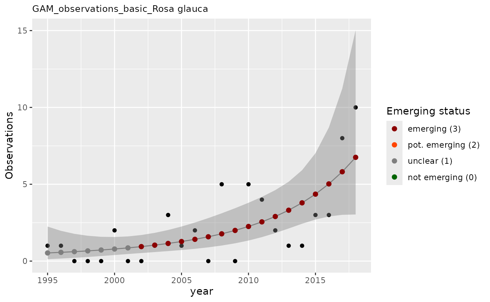

Occurrence functions
Damiano Oldoni
Source:vignettes/occurrence-functions.Rmd
occurrence-functions.RmdThis vignette demonstrates the occurrence-based functions in the trias package for assessing emerging status of alien species using time series data.
Introduction
The occurrence functions analyze time series of observations or occupancy data to detect emerging alien species. Two approaches are available:
- Decision rules - Apply simple logical rules to assess emerging status
- GAM (Generalized Additive Models) - Use statistical models to detect significant trends
Decision rules approach
The apply_decision_rules() function applies a set of
decision rules to time series data to assess emerging status at a
specific evaluation year.
Example data
Let’s create example time series data for two taxa:
df_rules <- tibble(
taxonID = c(rep(1008955, 10), rep(2493598, 3)),
year = c(seq(2009, 2018), seq(2016, 2018)),
obs = c(1, 0, 1, 1, 0, 0, 0, 0, 0, 0, 1, 3, 0)
)
# View the data
df_rules
#> # A tibble: 13 × 3
#> taxonID year obs
#> <dbl> <int> <dbl>
#> 1 1008955 2009 1
#> 2 1008955 2010 0
#> 3 1008955 2011 1
#> 4 1008955 2012 1
#> 5 1008955 2013 0
#> 6 1008955 2014 0
#> 7 1008955 2015 0
#> 8 1008955 2016 0
#> 9 1008955 2017 0
#> 10 1008955 2018 0
#> 11 2493598 2016 1
#> 12 2493598 2017 3
#> 13 2493598 2018 0Apply decision rules
# Apply decision rules to assess emerging status in 2016
result <- apply_decision_rules(
df = df_rules,
eval_year = 2016,
y_var = "obs",
taxonKey = "taxonID",
year = "year"
)
# View the results
result
#> # A tibble: 2 × 7
#> taxonID year em_status dr_1 dr_2 dr_3 dr_4
#> <dbl> <dbl> <dbl> <lgl> <lgl> <lgl> <lgl>
#> 1 1008955 2016 1 FALSE FALSE FALSE FALSE
#> 2 2493598 2016 1 TRUE FALSE FALSE TRUEUnderstanding the results
The function returns:
-
em_status: Emerging status (0-3)
- 0: Not emerging
- 1: Unclear
- 2: Potentially emerging
- 3: Emerging
- dr_1: Does the time series contain only one positive value at evaluation year?
- dr_2: Is value at evaluation year above median value?
- dr_3: Does the time series contain only zeros in the five years before evaluation year?
- dr_4: Is the value at evaluation year the maximum ever observed?
GAM approach
The apply_gam() function uses Generalized Additive
Models to assess the emerging status of a species over a time window.
This is a more sophisticated statistical approach that can detect trends
and account for research effort bias. It can also be applied on the
number of observations or occupancy data (number of occupied grid
cells), if given.
Example data
df_gam <- tibble(
taxonKey = rep(3003709, 24),
canonicalName = rep("Rosa glauca", 24),
year = seq(1995, 2018),
n = c(
1, 1, 0, 0, 0, 2, 0, 0, 1, 3, 1, 2, 0, 5, 0, 5, 4, 2, 1,
1, 3, 3, 8, 10
),
n_class = c(
1, 1, 0, 0, 0, 2, 0, 0, 1, 3, 1, 2, 0, 4, 0, 3, 3, 2, 1,
1, 2, 2, 4, 5
)
)
# View the data
head(df_gam, 10)
#> # A tibble: 10 × 5
#> taxonKey canonicalName year n n_class
#> <dbl> <chr> <int> <dbl> <dbl>
#> 1 3003709 Rosa glauca 1995 1 1
#> 2 3003709 Rosa glauca 1996 1 1
#> 3 3003709 Rosa glauca 1997 0 0
#> 4 3003709 Rosa glauca 1998 0 0
#> 5 3003709 Rosa glauca 1999 0 0
#> 6 3003709 Rosa glauca 2000 2 2
#> 7 3003709 Rosa glauca 2001 0 0
#> 8 3003709 Rosa glauca 2002 0 0
#> 9 3003709 Rosa glauca 2003 1 1
#> 10 3003709 Rosa glauca 2004 3 3Apply GAM
# Apply GAM to assess emerging status
result_gam <- apply_gam(
df = df_gam,
y_var = "n",
eval_years = c(2017, 2018),
year = "year",
taxonKey = "taxonKey",
type_indicator = "observations",
name = "Rosa glauca",
p_max = 0.1,
saveplot = FALSE,
verbose = FALSE
)
# Display the plot
result_gam$plot
Understanding GAM results
The apply_gam() function returns a list with:
- em_summary: Data frame summarizing emerging status for each evaluation year
- output: Detailed GAM model output with predictions and confidence intervals
-
plot: Visualization showing:
- Observed values (points)
- GAM model fit (line)
- Confidence intervals (shaded area)
- Emerging status indicators
result_gam$em_summary
#> # A tibble: 2 × 5
#> taxonKey year em_status growth method
#> <dbl> <dbl> <dbl> <dbl> <chr>
#> 1 3003709 2017 3 1.03 basic
#> 2 3003709 2018 3 1.02 basic
result_gam$output
#> # A tibble: 24 × 14
#> taxonKey canonicalName year n n_class method fit ucl lcl em1
#> <dbl> <chr> <dbl> <dbl> <dbl> <chr> <dbl> <dbl> <dbl> <dbl>
#> 1 3003709 Rosa glauca 1995 1 1 basic 0.530 2.25 0.125 0
#> 2 3003709 Rosa glauca 1996 1 1 basic 0.570 1.97 0.165 0
#> 3 3003709 Rosa glauca 1997 0 0 basic 0.614 1.78 0.212 0
#> 4 3003709 Rosa glauca 1998 0 0 basic 0.664 1.65 0.268 0
#> 5 3003709 Rosa glauca 1999 0 0 basic 0.721 1.58 0.329 0
#> 6 3003709 Rosa glauca 2000 2 2 basic 0.786 1.57 0.394 0
#> 7 3003709 Rosa glauca 2001 0 0 basic 0.859 1.61 0.460 0
#> 8 3003709 Rosa glauca 2002 0 0 basic 0.943 1.70 0.524 1
#> 9 3003709 Rosa glauca 2003 1 1 basic 1.04 1.84 0.587 1
#> 10 3003709 Rosa glauca 2004 3 3 basic 1.15 2.02 0.651 1
#> # ℹ 14 more rows
#> # ℹ 4 more variables: em2 <dbl>, em <dbl>, em_status <dbl>, growth <dbl>Other components include: - model: The formula behind the GAM modelling
result_gam$model
#>
#> Family: Negative Binomial(3.527)
#> Link function: log
#>
#> Formula:
#> n ~ s(year, k = maxk, m = 3, bs = "tp")
#>
#> Estimated degrees of freedom:
#> 2 total = 3
#>
#> REML score: 42.28844- first_derivative and second_derivative: Data frames with derivatives of the GAM fit, with confidence intervals.
result_gam$first_derivative
#> # A tibble: 24 × 7
#> smooth derivative se crit lower_ci upper_ci year
#> <chr> <dbl> <dbl> <dbl> <dbl> <dbl> <dbl>
#> 1 s(year) 0.0699 0.124 1.28 -0.0891 0.229 1995.
#> 2 s(year) 0.0734 0.115 1.28 -0.0739 0.221 1996.
#> 3 s(year) 0.0770 0.106 1.28 -0.0588 0.213 1997.
#> 4 s(year) 0.0805 0.0970 1.28 -0.0437 0.205 1998.
#> 5 s(year) 0.0841 0.0881 1.28 -0.0288 0.197 1999.
#> 6 s(year) 0.0876 0.0793 1.28 -0.0140 0.189 2000.
#> 7 s(year) 0.0911 0.0707 1.28 0.000581 0.182 2001.
#> 8 s(year) 0.0947 0.0623 1.28 0.0149 0.174 2002.
#> 9 s(year) 0.0982 0.0542 1.28 0.0288 0.168 2003.
#> 10 s(year) 0.102 0.0466 1.28 0.0421 0.161 2004.
#> # ℹ 14 more rows
result_gam$second_derivative
#> # A tibble: 24 × 7
#> smooth derivative se crit lower_ci upper_ci year
#> <chr> <dbl> <dbl> <dbl> <dbl> <dbl> <dbl>
#> 1 s(year) 0.00354 0.00938 1.28 -0.00847 0.0156 1995.
#> 2 s(year) 0.00354 0.00938 1.28 -0.00847 0.0156 1996.
#> 3 s(year) 0.00354 0.00937 1.28 -0.00847 0.0156 1997.
#> 4 s(year) 0.00354 0.00937 1.28 -0.00847 0.0156 1998.
#> 5 s(year) 0.00354 0.00937 1.28 -0.00847 0.0156 1999.
#> 6 s(year) 0.00354 0.00937 1.28 -0.00847 0.0156 2000.
#> 7 s(year) 0.00354 0.00937 1.28 -0.00847 0.0156 2001.
#> 8 s(year) 0.00354 0.00937 1.28 -0.00847 0.0156 2002.
#> 9 s(year) 0.00354 0.00937 1.28 -0.00847 0.0156 2003.
#> 10 s(year) 0.00354 0.00937 1.28 -0.00847 0.0156 2004.
#> # ℹ 14 more rowsCorrecting for research effort
The GAM approach can also correct for research effort bias using a baseline covariate:
# Apply GAM with baseline correction
result_gam_corrected <- apply_gam(df_gam,
y_var = "n",
eval_years = 2018,
baseline_var = "n_class",
taxon_key = 3003709,
name = "Rosa glauca",
verbose = TRUE
)
#> [1] "Analyzing: Rosa glauca(3003709)"
# Display the plot
result_gam_corrected$plot
Choosing between approaches
Use GAM when: - You have sufficient data (at least 10-15 time points) - You want to account for trends and variability - You need to correct for research effort bias - You want statistical confidence measures
Use decision rules when: - You have limited data (and GAM doesn’t work) - You want quick assessments
Additional resources
For more information on individual functions, see the Reference page.